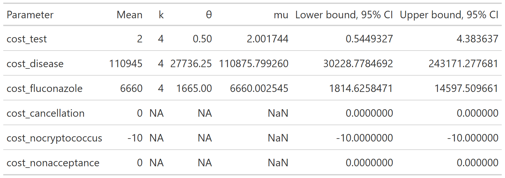
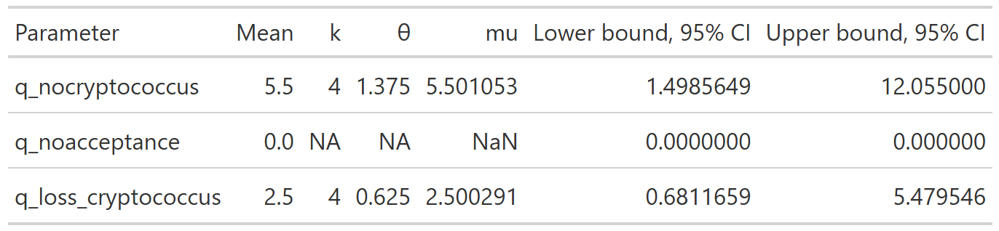

The decision tree analysis in the base case analysis assumes that the parameters of the model are known with certainty.
In reality, the true values of these parameters are unknown. We are either estimating them from prior literature or assuming values based on expert opinion.
Instead of assigning a single fixed value to each model input (for example, “the probability of cryptococcal transmission is X%”), PSA allows each uncertain parameter to vary across a plausible range based on the available evidence. For each parameter, we specify a probability distribution that reflects how uncertain we are about its true value.
The model is then run many times. In each run, the model randomly draws one value for each parameter from its corresponding distribution and calculates the resulting costs and health outcomes. This produces a distribution of possible results rather than a single point estimate.
For the purposes of this analysis, we have run the analysis 10,000 times
We can plot the costs and QALYs from each simulation on a two-dimensional plot, yielding a cost-effectiveness plane. From this, we derive a 95% confidence ellipse representing the joint uncertainty of the true cost and QALY change from screening.
Source code
The probabilistic sensitivity analysis shown on this page is implemented in:
This script defines parameter distributions, runs Monte Carlo simulations, and computes expected costs and QALYs.
Parameters of the model
###Probabilities


Code
#First, we create the dataset with the simulated values#Extract values from abovePSA_simulation<-list()PSA_simulation$probabilities <- PSA_parameters$probabilities %>%transmute(draws = purrr::map2(shape1, shape2, ~rbeta(nsim, .x, .y)) ) %>%pull(draws) %>% rlang::set_names(PSA_parameters$probabilities$parameter) %>%as_tibble()PSA_simulation$costs<-PSA_parameters$costs %>%transmute(draws = purrr::map2(shape, scale, ~rgamma(nsim, shape=.x, scale=.y)) ) %>%pull(draws) %>% rlang::set_names(PSA_parameters$costs$parameter) %>%as_tibble()%>%mutate(cost_cancellation=0,cost_nocryptococcus=-10,cost_nonacceptance=0)PSA_simulation$qalys<-PSA_parameters$qalys %>%transmute(draws = purrr::map2(shape, scale, ~rgamma(nsim, shape=.x, scale=.y)) ) %>%pull(draws) %>% rlang::set_names(PSA_parameters$qalys$parameter) %>%as_tibble()%>%mutate(q_noacceptance=0)#Combine into a single tibblePSA_simulation<-bind_cols(PSA_simulation)%>%#Add derived quantitiesmutate(p_nonusage=1-p_usage,p_donor_nocryptococcus=1-p_donor_cryptococcus,p_nontransmission=1-p_transmission,p_nospont_cryptococcus=1-p_spont_cryptococcus,p_falsenegative=1-p_sensitivity,p_falsepositive=1-p_specificity,p_nocancelled=1-p_cancelled,p_noprophrate=1-p_prophrate,p_noprophefficacy=1-p_prophefficacy,p_breakthrough_donorpos=(1-p_prophefficacy)*p_transmission,p_nobreakthrough_donorpos=1-p_breakthrough_donorpos,p_breakthrough_donorneg=(1-p_prophefficacy)*p_spont_cryptococcus,p_nobreakthrough_donorneg=1-p_breakthrough_donorneg,q_cryptococcus=q_nocryptococcus-q_loss_cryptococcus)%>%#Calculate costs and QALYsrowwise() %>%mutate(results=list(calculate_cost_QALY_QC(p_usage=p_usage, p_donor_cryptococcus=p_donor_cryptococcus, p_transmission=p_transmission,p_spont_cryptococcus=p_spont_cryptococcus,p_sensitivity=p_sensitivity,p_specificity=p_specificity,p_cancelled=p_cancelled,p_prophrate=p_prophrate,p_prophefficacy=p_prophefficacy,cost_test=cost_test,cost_disease=cost_disease,cost_fluconazole=cost_fluconazole,cost_cancellation=cost_cancellation,cost_nocryptococcus=cost_nocryptococcus,cost_nonacceptance=cost_nonacceptance,q_nocryptococcus=q_nocryptococcus,q_noacceptance=q_noacceptance,q_loss_cryptococcus=q_loss_cryptococcus )))%>%ungroup()PSA_simulation_unnested<-PSA_simulation%>%unnest(results)%>%mutate(cost_change=total_expected_cost_s-total_expected_cost_ns,qaly_change=total_expected_qaly_s-total_expected_qaly_ns)%>%mutate(icer=cost_change/qaly_change)%>%mutate(nmb = wtp * qaly_change - cost_change )#Calculate the 95% ellipsePSA_min_df <- PSA_simulation_unnested %>%select(qaly_change, cost_change)# Create mu and sigma vectors for ellipseellipse_mu <-colMeans(PSA_min_df)ellipse_Sigma <-cov(PSA_min_df)# Generate ellipse pointsellipse_df <-as.data.frame(ellipse( ellipse_Sigma,centre = ellipse_mu,level =0.95,npoints =200 ))colnames(ellipse_df) <-c("qaly_change", "cost_change")#Create PSA plotPSA_plot<-PSA_simulation_unnested%>%ggplot()+geom_point(mapping =aes(x=qaly_change, y=cost_change), alpha=0.1)+geom_path(data = ellipse_df,color ="red",mapping =aes(x=qaly_change, y=cost_change),linewidth =1 )+geom_hline(yintercept =0, linewidth =0.4, color ="black")+geom_vline(xintercept =0, linewidth =0.4, color ="black")+coord_cartesian(xlim =c(-1.5, 1.5),ylim =c(-300, 300))+theme_classic()+theme(plot.title =element_text(hjust =0.5) )+labs(title ="Probabilistic sensitivity analysis",x="QALY change",y="Cost change" )ggsave("figures/PSA_plot.svg")PSA_plot
Source Code
---title: "Probabilistic sensitivity analyses"format: htmleditor: visual---```{r setup, include=FALSE}library(here)source(here::here("R", "setup.R"))```## What is a probabilistic sensitivity analysis?The decision tree analysis in the [base case analysis](/quarto/base_case.qmd) assumes that the parameters of the model are known with certainty.In reality, the true values of these parameters are unknown. We are either estimating them from prior literature or assuming values based on expert opinion.A [**probabilistic sensitivity analysis (PSA)**](https://journals.sagepub.com/doi/10.1177/0962280211419832) is a way of explicitly ascertaining the effects of that uncertainty on a cost-effectiveness model.Instead of assigning a single fixed value to each model input (for example, “the probability of cryptococcal transmission is X%”), PSA allows each uncertain parameter to vary across a plausible range based on the available evidence. For each parameter, we specify a probability distribution that reflects how uncertain we are about its true value.The model is then run many times. In each run, the model randomly draws one value for each parameter from its corresponding distribution and calculates the resulting costs and health outcomes. This produces a distribution of possible results rather than a single point estimate.For the purposes of this analysis, we have run the analysis `r scales::comma(nsim)` timesWe can plot the costs and QALYs from each simulation on a two-dimensional plot, yielding a **cost-effectiveness plane**. From this, we derive a **95% confidence ellipse** representing the joint uncertainty of the true cost and QALY change from screening.::: callout-note### Source codeThe probabilistic sensitivity analysis shown on this page is implemented in:- [`R/create_sensitivity_analysis_QC.R`](https://github.com/VagishHemmige/Cryptococcus-donor-screening-CEA/blob/master/R/create_sensitivity_analysis_QC.R)This script defines parameter distributions, runs Monte Carlo simulations,and computes expected costs and QALYs.:::## Parameters of the model###Probabilities```{r psa_code, eval=FALSE}#First, we create the dataset with the simulated values#Extract values from abovePSA_simulation<-list()PSA_simulation$probabilities <- PSA_parameters$probabilities %>% transmute( draws = purrr::map2(shape1, shape2, ~ rbeta(nsim, .x, .y)) ) %>% pull(draws) %>% rlang::set_names(PSA_parameters$probabilities$parameter) %>% as_tibble()PSA_simulation$costs<-PSA_parameters$costs %>% transmute( draws = purrr::map2(shape, scale, ~ rgamma(nsim, shape=.x, scale=.y)) ) %>% pull(draws) %>% rlang::set_names(PSA_parameters$costs$parameter) %>% as_tibble()%>% mutate(cost_cancellation=0, cost_nocryptococcus=-10, cost_nonacceptance=0)PSA_simulation$qalys<-PSA_parameters$qalys %>% transmute( draws = purrr::map2(shape, scale, ~ rgamma(nsim, shape=.x, scale=.y)) ) %>% pull(draws) %>% rlang::set_names(PSA_parameters$qalys$parameter) %>% as_tibble()%>% mutate(q_noacceptance=0)#Combine into a single tibblePSA_simulation<-bind_cols(PSA_simulation)%>% #Add derived quantities mutate( p_nonusage=1-p_usage, p_donor_nocryptococcus=1-p_donor_cryptococcus, p_nontransmission=1-p_transmission, p_nospont_cryptococcus=1-p_spont_cryptococcus, p_falsenegative=1-p_sensitivity, p_falsepositive=1-p_specificity, p_nocancelled=1-p_cancelled, p_noprophrate=1-p_prophrate, p_noprophefficacy=1-p_prophefficacy, p_breakthrough_donorpos=(1-p_prophefficacy)*p_transmission, p_nobreakthrough_donorpos=1-p_breakthrough_donorpos, p_breakthrough_donorneg=(1-p_prophefficacy)*p_spont_cryptococcus, p_nobreakthrough_donorneg=1-p_breakthrough_donorneg, q_cryptococcus=q_nocryptococcus-q_loss_cryptococcus)%>% #Calculate costs and QALYs rowwise() %>% mutate(results=list(calculate_cost_QALY_QC(p_usage=p_usage, p_donor_cryptococcus=p_donor_cryptococcus, p_transmission=p_transmission, p_spont_cryptococcus=p_spont_cryptococcus, p_sensitivity=p_sensitivity, p_specificity=p_specificity, p_cancelled=p_cancelled, p_prophrate=p_prophrate, p_prophefficacy=p_prophefficacy, cost_test=cost_test, cost_disease=cost_disease, cost_fluconazole=cost_fluconazole, cost_cancellation=cost_cancellation, cost_nocryptococcus=cost_nocryptococcus, cost_nonacceptance=cost_nonacceptance, q_nocryptococcus=q_nocryptococcus, q_noacceptance=q_noacceptance, q_loss_cryptococcus=q_loss_cryptococcus )))%>% ungroup()PSA_simulation_unnested<-PSA_simulation%>% unnest(results)%>% mutate(cost_change=total_expected_cost_s-total_expected_cost_ns, qaly_change=total_expected_qaly_s-total_expected_qaly_ns)%>% mutate(icer=cost_change/qaly_change)%>% mutate( nmb = wtp * qaly_change - cost_change )#Calculate the 95% ellipsePSA_min_df <- PSA_simulation_unnested %>% select(qaly_change, cost_change)# Create mu and sigma vectors for ellipseellipse_mu <- colMeans(PSA_min_df)ellipse_Sigma <- cov(PSA_min_df)# Generate ellipse pointsellipse_df <- as.data.frame( ellipse( ellipse_Sigma, centre = ellipse_mu, level = 0.95, npoints = 200 ))colnames(ellipse_df) <- c("qaly_change", "cost_change")#Create PSA plotPSA_plot<-PSA_simulation_unnested%>% ggplot()+ geom_point(mapping = aes(x=qaly_change, y=cost_change), alpha=0.1)+ geom_path( data = ellipse_df, color = "red", mapping = aes(x=qaly_change, y=cost_change), linewidth = 1 )+ geom_hline(yintercept = 0, linewidth = 0.4, color = "black")+ geom_vline(xintercept = 0, linewidth = 0.4, color = "black")+ coord_cartesian(xlim = c(-1.5, 1.5), ylim = c(-300, 300))+ theme_classic()+ theme( plot.title = element_text(hjust = 0.5) )+ labs( title = "Probabilistic sensitivity analysis", x="QALY change", y="Cost change" )ggsave("figures/PSA_plot.svg")PSA_plot```